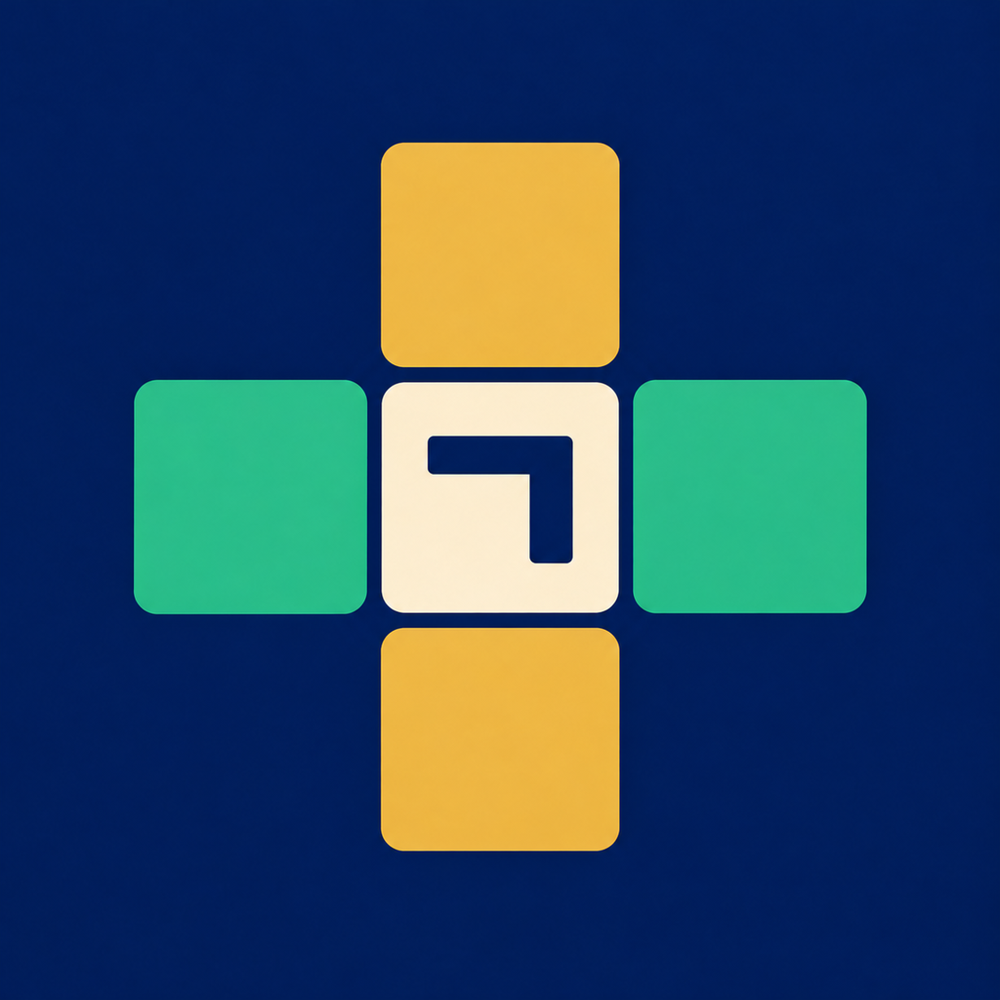
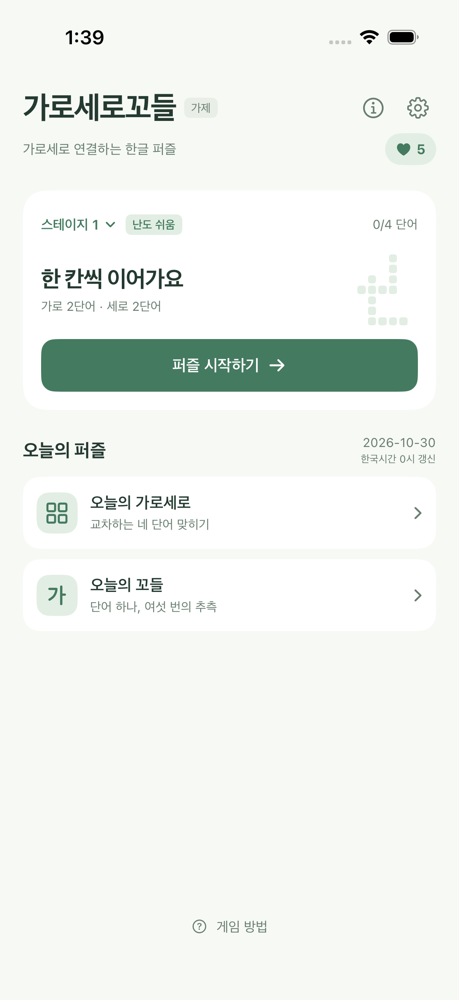
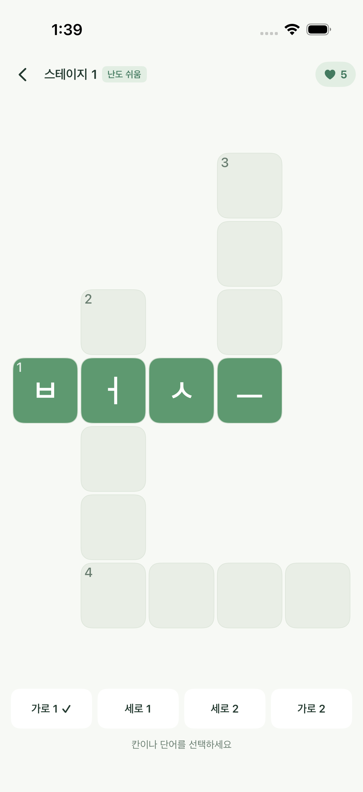
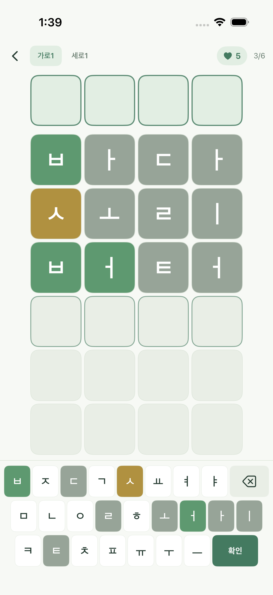
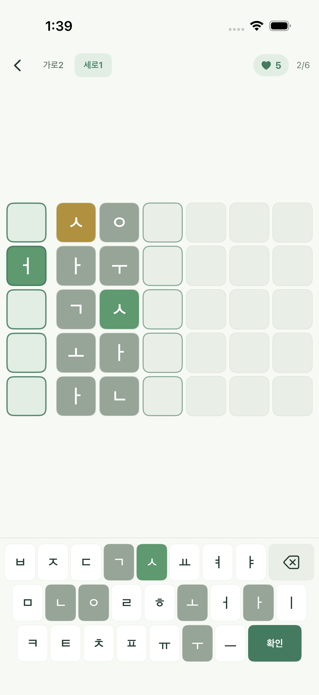
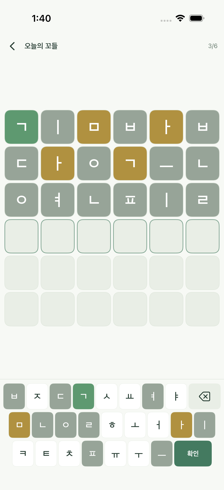
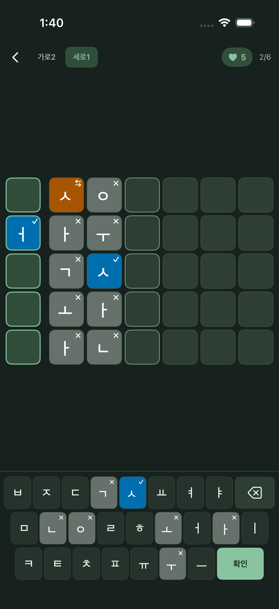

iPhone
출시 예정
대한민국 · 무료 출시 예정

한 단어의 정답이 다음 단어의 단서가 됩니다.
출시 예정
대한민국 · 무료 출시 예정
한글 단어를 자음과 모음으로 나누어 추리하는 가로세로 퍼즐입니다. 기본 자모 하나가 한 칸을 사용합니다. 4~7칸의 단어를 여섯 번 안에 맞히고, 정답으로 얻은 교차 단서를 이어가세요.
화면을 옆으로 넘겨 더 살펴보세요.






출시 예정
대한민국 App Store에 무료 출시할 예정입니다. 공개 다운로드는 출시 후 안내합니다.
사용 방법과 자주 묻는 질문은 고객 지원 페이지에서 확인하실 수 있습니다. 문의는 지원 이메일로 보내 주세요.